← 返回阅读库 · 原论文目录
论文讲解阅读文档 · 表征学习 · v181
SwAV Swapping Assignments between multiple Views[2006.09882]
视频时长 00:16:59；讲解文字 7,067 字符；提取讲解画面 42 张。按视频原顺序阅读，每段文字保留时间戳。
文字来自整段视频的自动语音转写，按自然停顿分段，并与 PPT / 论文页面 / 演示画面对齐。未将讲解压缩为摘要；术语、数字和口述公式请结合画面及原论文核对。 阅读稿已校正规范部分明确术语误识别；原始逐字稿和每处修改记录另行保留。
讲解画面为源视频截图（640×360），不是可编辑 PPT 文件。全片按每秒 2 帧扫描内容变化，逐步展开页保留；连续动画保留代表画面。清晰度受源视频限制。
下载完整资料包 · 含离线 HTML、PDF、Word、全部 PPT 画面和字幕。
原论文与材料
Unsupervised Learning of Visual Features by Contrasting Cluster Assignments · 下载完整 PDF（23 页）
按时间阅读
00:00:00–00:00:40 · 画面 001
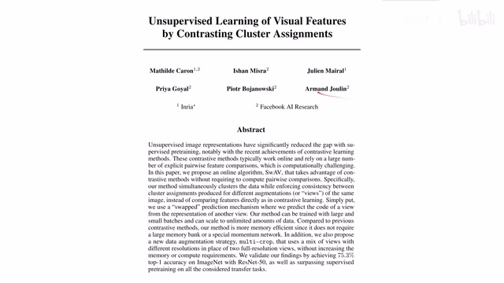
00:00:00–00:00:40 · 画面 001大家好今天我们来介绍 unsupervised learning of visual features by contrasting cluster assignments 那么这篇论文的主要贡献呢在于它是提供了一种 online algorithm 用来做 self-supervised learning 也就是说它不用在一个完整的大的数据集上做训练你可以不断的加入你的新的图像进去来改善它的效果那么同时呢本文还提出了一种新的图像增强的策略叫做 multicrop就是截取图像中的一小块作为增强的样本那么这样子呢能够在尽量节省内存的情况下提高了我们的样本的多样性那么在今天的视频中呢我们会首先介绍本文的 intuition 也就是作者基于为了解决哪些问题他提出了本文的这些方法然后呢就是本文的核心 online clustering 本文是怎么样通过 clustering 来解决
00:00:40–00:01:11 · 画面 002
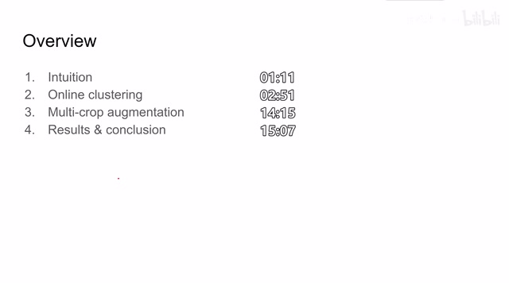
00:00:40–00:01:11 · 画面 002就是聚类的方法来解决 contrastive learning 的问题的，那么随后呢是本文的提出的这个 multicrop 是一个锦上添花的这个 data augmentation 的策略，那么最后呢是作者汇报的一些结果和讨论。那么首先来看 contrastive learning，那肯定是要对比两个图像的 feature 然后来做学习
00:01:11–00:02:51 · 画面 003
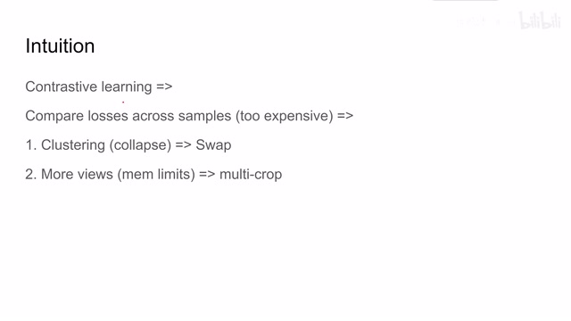
00:01:11–00:02:51 · 画面 003那么这样呢，它主要会产生两个问题。第一就是像我们在 SimCLR 里面一样的，我需要有很多个样本来去做相互的对比，这也就限制了说你在做 Contrastive Learning 的时候，你的 Batch Size 一定要大，只有一个 Batch 的样本呢，这样子呢才能更好地把不同的样本给它区别开。那么随着 Batch Size 的增加呢，那第二个问题就随之而来了我的每一个 feature 它的 dimension 本来都是很大的，我要对比两个样本的话，我需要对比两个样本的 feature 它们之间的距离。那么随着样本数量的增加，这种计算量的增加是一个指数倍的增长的。基于以上的问题，作者就想到了，我能不能使用聚类的方法
来减少我们需要对比的 feature 的数量来达到减少运算量的目的那么这个聚类或者说是投影它不能是单向的也就是我不但要从我的 feature 能够投影到我的聚类的领域里面我同时也要从聚类的领域里面能够一定程度的反映到不同的 feature 这样它才能避免说所有的模型都塌缩到聚类空间里面的某一个点上那么为了避免这种问题作者就提出了 swap 也就是交换投影方向的这么一个方法那么这个方法也是比较常用的一个 trick，同时我要加入更多的 views，更多的增强过的图像，但是考虑到我的内存的限制，我新增的图像不会像原来的那些原始图像那样那么高像素，这样我就可以既节约了内存，又同时增加了图像的多样性。那么具体来看，对于传统的 contrastive learning 的方法来讲，我们的图像进来经过不同的图像增强策略得到的不同的图像
00:02:51–00:04:51 · 画面 004
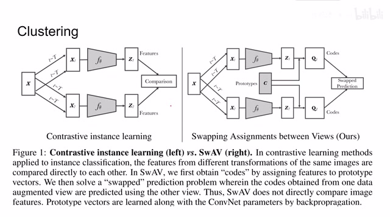
00:02:51–00:04:51 · 画面 004进入同样的 encoder 里面然后得到不同的这个特征那么对于这些不同的特征来说我们知道哪些特征是来自于同一幅图像的因此呢我们需要把这些特征聚到一起哪些特征呢来自于不同的图像然后呢我们就要把这些特征远离开那么最经典的像 triple loss 这种 loss 呢就帮助我们实现了说把该聚的聚在一起把该分开的分开这样的一种情况但是呢，这种传统的 contrastive loss 这个带来的问题，我们之前已经介绍过了。那么本文的作者呢在这里引入了一个叫做 prototypes 这个矩阵呢，其实就是很多个聚类中心的他们的几个集合，但是这个聚类中心的数量呢是要小于我们原来 feature 的它的尺度的。那我现在把我原来的 feature 全部投到这个聚类的中心里面，然后呢我就会有一个 code
那我通过对比这个低维度的 code，因为它相对于 feature 它的维度是比较低的，那么我就可以减少运算量。同时呢，因为我们过去所有的样本都是经过这个 prototypes 它的描述之后来得到这个 code，那么这个 prototypes 呢，你就可以理解成我们坐标系中的一个横轴纵轴一样，它就是我们定位用的坐标。而且这个坐标系呢，是对于所有的 batch 都通用的，也就是说，我如果把图像的 feature 全部都用这个 prototypes 来表示那么其实大家都统一在一个相同的维度下面了。这个呢，就像我们地理定位里面的坐标对吧，精度维度一样。你原来的情况就是每个人家里的地址对吧，很长一串的地址写出来，你要对比两个人家里之间的地址，它不太好对比。那现在呢，你大家所有的把自己的位置全部都改成精维度，那就两个数字，你再加个高度也可以。那么现在所有人的位置呢，都可以通过精维度这种系统来描述了
00:04:51–00:05:00 · 画面 005
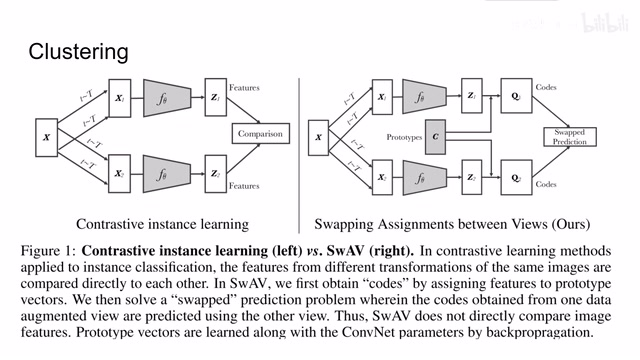
00:04:51–00:05:00 · 画面 005那你这样子来对比它们之间的相互的距离就变得相对的很轻松。那么我们先从代码的最顶层开始往下看，就是我们在构造一个什么样的 contrastive loss 呢？首先作者告诉我们这是一个 cross entropy 的 loss，那么这个 loss 呢，是在 code 和这个 projection 之间的。这个 projection 呢，是我给起了一个名字，你可以呢，甚至叫它 similarity 也可以。那么它的原理呢，其实非常简单，就是我的 feature 乘上我的 prototype
00:05:00–00:07:00 · 画面 006
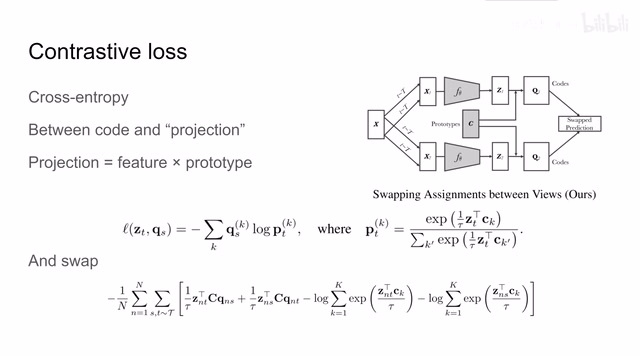
00:05:00–00:07:00 · 画面 006这里这里我们看到呢，作者维护了一个 prototype，这个 prototype 呢，就是我们之前说的所有的聚类的它们中心的集合。假如呢，这里我们有 k 个这个 prototype 的 vector，那么对于我一个样本的 feature，我的这个 feature 和每一个 prototype 它的相似的程度我们给它计算出来。那么如何计算两个向量的相似程度呢就是两个向量的内积，然后你再取到两个向量的长度，你就可以得到这两个向量的夹角它们的这个距离。那么你把这个 feature 的 vector 和每一个 prototype 都去做这么一个内积，那么每一个内积就会给你一个描述，这个描述就是衡量你现在这个 feature 和这个 prototype 它们之间的相似程度。那么你现在把这 k 个不同的相似程度换起来作为一个 vector
那么这个长度为 K 的 vector 其实就可以用来描述你之前的这个 feature。这个思想的原理跟像 SVM 里面的 kernel 的方法其实很接近，就是我原来的一个 feature 它可能在很高的维度，我现在通过一串 support vector 来计算出我这个 example 和每个 support vector 它们之间的距离，那么这一串距离的序列就可以作为我们描述这个 sample 它的一个特征当然你在计算完这些距离之后呢，你可以用一个 softmax 把它变成一个概率分布。那么这里呢，还有一个套，这个套呢，我们叫 temperature，也是用来控制我们这个 projection 这个限量它的分布的。那么这样子得到 projection 呢，我们就可以作为这个 cross entropy 其中的一个 distribution。那么另一个 distribution 在哪里呢？这里我们假设它是在上面这层 Z1 乘上 C 它们产生了一个 projection
00:07:00–00:07:28 · 画面 007
00:07:00–00:07:28 · 画面 007那么另一个 distribution 这个 q 是怎么产生的呢？这个呢，我们就要看到下面这一只，下面这只呢，我们一样通过不同的随机的图像增强的策略得到一张新的图像，过 encoder 之后得到一个 feature。那么这个 feature 呢，也是先和这个 prototypes 相乘，乘出来呢，得到类似于跟我们上面这只一样的 projection。但是呢，还没完，我们要经过这个矩阵 q 它的处理
00:07:28–00:07:29 · 画面 008
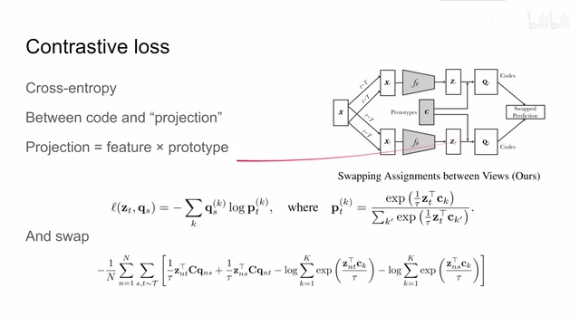
00:07:28–00:07:29 · 画面 00800:07:29–00:08:01 · 画面 009
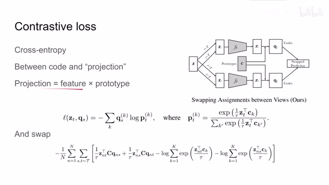
00:07:29–00:08:01 · 画面 009这个 code 呢跟我们之前的 projection 它的尺寸大小都是一样的唯一的区别呢就是它经过了这样一个神奇的变换 q 那么在这里呢我们先不要管它 q 具体的实现是怎么样的我们就认为它相当于把原来的这个 projection 稍微变换了一下但是尺寸没有变变成了我们的一个 target code 那么这样子呢我们对比这个 target code 这个 q 再对比我们上面这只的这个 projection 我们就形成了一个 contrastive loss
00:08:01–00:08:02 · 画面 010
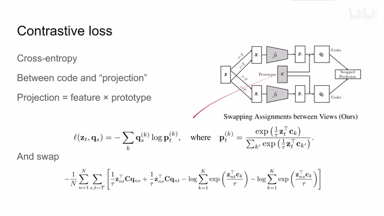
00:08:01–00:08:02 · 画面 01000:08:02–00:08:27 · 画面 011
00:08:02–00:08:27 · 画面 011那我希望相同图像在这两只产生的这个 projection 和这个 cause 他们要尽量的接近嘛那么同样的我也可以交换这个对比使用另一个 q 对吧和这个 projection 来对比这样就会产生一个相同的 loss 比如说这里叫做 loss zs 和 qt 那么把他们两个这个 loss 加起来那就是我们最终的要训练的这个 loss 那么这个式子看起来挺唬人啊其实就是把这个 cross entropy
00:08:27–00:08:28 · 画面 012
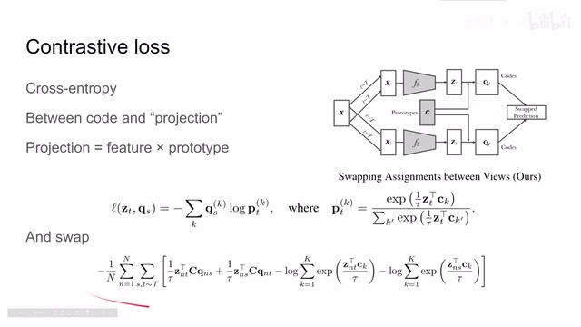
00:08:27–00:08:28 · 画面 01200:08:28–00:08:31 · 画面 013
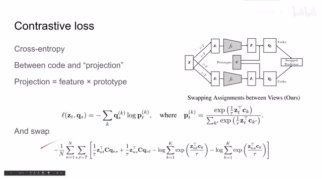
00:08:28–00:08:31 · 画面 01300:08:31–00:08:36 · 画面 014
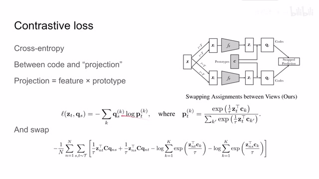
00:08:31–00:08:36 · 画面 014这个东西布置一份打开写出来呢就是这个样子然后呢我们就可以关注这个 q 它是怎么实现的了这里呢作者是把这个 q 定义成了一个 optimal transportation 叫最优运输的这么一个问题它的解我们来看这里左侧呢我们有一个 samples 那每个 samples 呢它都有一个 feature 叫做 z 右边呢我们有 key 个 prototype 也就是剧烈的中心
00:08:36–00:08:39 · 画面 015
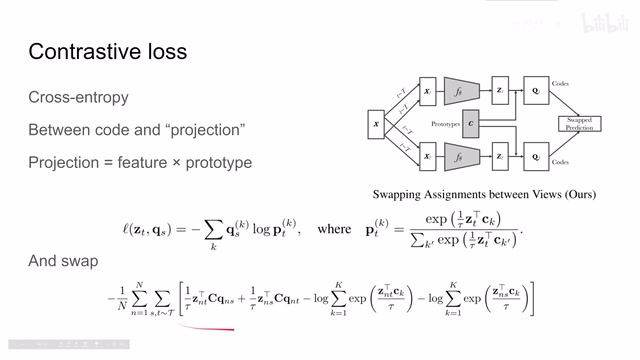
00:08:36–00:08:39 · 画面 01500:08:39–00:10:39 · 画面 016
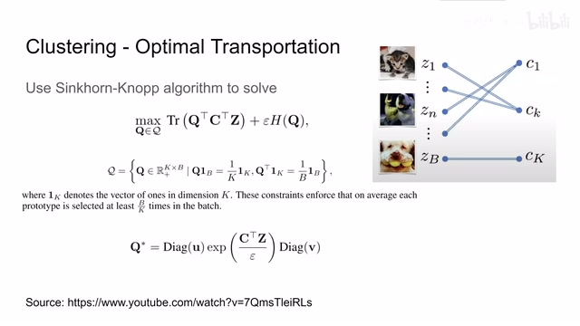
00:08:39–00:10:39 · 画面 016那刚刚我们讲到了这个 Z 要和每一个 prototype 它们之间相乘做出一个矩阵来来通过每一个 feature 和 prototype 之间的关系来描述当前的这个 feature 那你也可以认为这是一种把一个样本投射到 K 个这个聚类中心的这是一种运输问题那么这个相似程度的矩阵呢其实就是描述的它们之间是怎么样运输的比如说你这个样本和这个据队中心区的多一点其实就是他们两个相似间相似程度近一点和其他的中心远一点就是相似程度不是那么高你这个样本呢和这个中心相似程度高这样子呢这是一个矩阵那么这个矩阵呢我们现在要把它变成一种最优的 transportation 的表述这个表述呢是这个样子的首先我们看右边这项比较简单的 entropy 这个 entropy 呢就是 q 矩阵中的每一个元素做那个 entropy
然后它其实就是一个 Regularization 用来限制这个 Q 不要太激进那么左边这个呢是矩阵的质也就是最角线元素之和这个矩阵呢是这个 Q 乘上 C 乘上 Z 这个呢我们要从 Q 这里分开来看 C 乘上 Z 就是我们刚刚说的从 B 个 Samples 到 K 个 Centers 这么一个转移的矩阵那么 Q 呢也是这样一个转移的矩阵我们把这两个矩阵相乘之后得到的就是一个方振那么因为这两个矩阵都是做过规划的这个方振的对角线上的每一个元素描述的就是这个矩阵和这个矩阵它们对应的每一个向量的相似程度那么这个方振的对角线元素之和就是这个方振的质我们希望这个质尽可能大其实也就是希望这个 Q 矩阵和 CZ 这个矩阵
00:10:39–00:11:12 · 画面 017
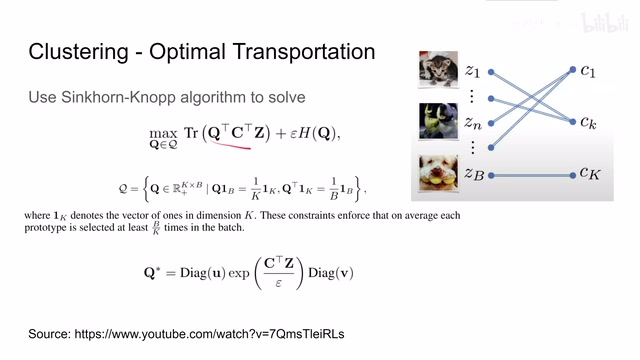
00:10:39–00:11:12 · 画面 017它们的对应的 vector 尽量相似而这个 Q 矩阵呢还不能照抄这个 CZ 这个矩阵这个 Q 矩阵呢我们还希望它满足它的每一行相加之后呢都是 K 分之一它的每一列相加都是 B 分之一这样子呢据作者说可以保证每一个 prototype 能够被至少选择 E 除以 K 次也就是让每一个 prototype 让每一个这个剧烈中心都能够发挥自己的作用
00:11:12–00:11:23 · 画面 018
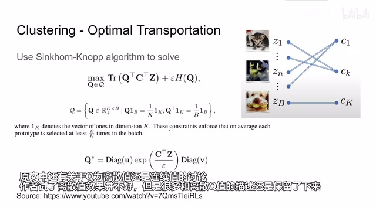
00:11:12–00:11:23 · 画面 01800:11:23–00:11:38 · 画面 019
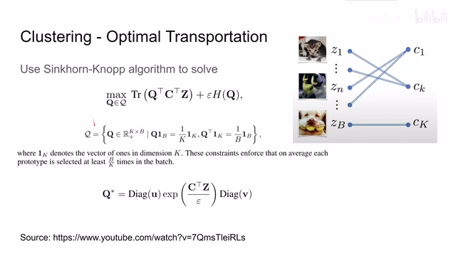
00:11:23–00:11:38 · 画面 019那么为了在这样的约束之下优化这样的问题，其实呢这就是一个带 regulation 的这个 optimal transportation。在这下面的相关的研究呢已经有很多了。那么这里呢作者就使用 Sinkhorn 这个算法，那么把这个上面这个问题呢就写成了这样的一个形式。这里的 cz 就是这里的 cz，这里的这个 y 就是这里控制 entropy 的这个 y，那这里的 u 和 v 啊都是和是 1 的向量
00:11:38–00:11:41 · 画面 020
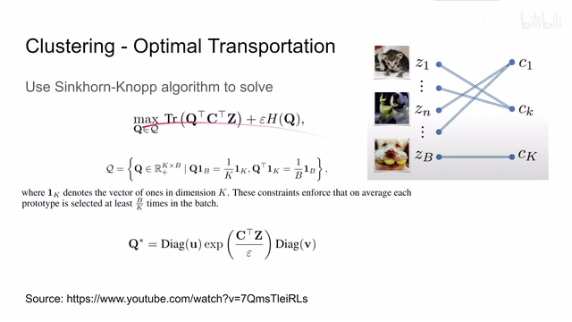
00:11:38–00:11:41 · 画面 02000:11:41–00:11:55 · 画面 021
00:11:41–00:11:55 · 画面 021那么我们具体来看这个 Sinkhorn 的算法是怎么样的。那么这里呢我们输入了一个 scores，这个 scores 呢就是这个 c 乘上 z 属于我们的 entropy 然后做指数，这个做转置呢是方便我们后面对其他的 scores 来相称。那么这个时候 q 的形状呢就是 k 行 b 列，k 呢是我们 prototypes 的数量，b 呢是一个 batch 使用 sample 的数量。那么这个 Sinkhorn 算法的核心呢就是
00:11:55–00:11:59 · 画面 022
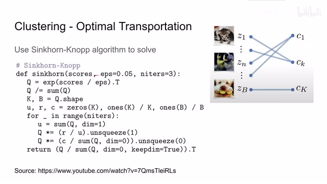
00:11:55–00:11:59 · 画面 02200:11:59–00:12:00 · 画面 023
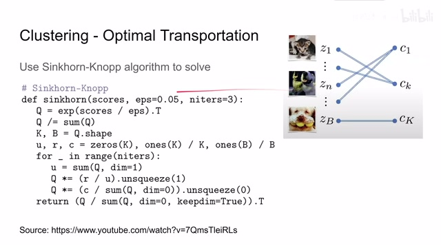
00:11:59–00:12:00 · 画面 02300:12:00–00:12:36 · 画面 024
00:12:00–00:12:36 · 画面 024我在每一次循环中，不断的去乘上这个矩阵，按行求和，然后做归一，乘到原来的矩阵上。然后呢，按列求和，做归一，乘到原来的矩阵上。然后就这样子的循环下去。最后呢，我们得到这个矩阵，再做归一化，它就是一个接近满足这种条件下，那么尽量呢，使我们的这个相似程度尽可能大的这么一个我们需要的 q，我们称之为 code
00:12:36–00:12:47 · 画面 025
00:12:36–00:12:47 · 画面 025那么这里我们来看一下作者提供的尾代码。首先我们一个图像 x 进来，对它进行不同的图像增强，得到 xt 和 xx。然后把它们都送到我们的 encoder 里面，得到相应的 embeddings，我们叫 zt 或者 zs。然后我们把这个 z 乘上这个 prototypes，得到这个 scores，就是我们的每一个 embedding 和每一个 prototype 它们的相似程度。那么也就是在这里的位置，我们有 score t，这里我们有 score s
00:12:47–00:13:24 · 画面 026
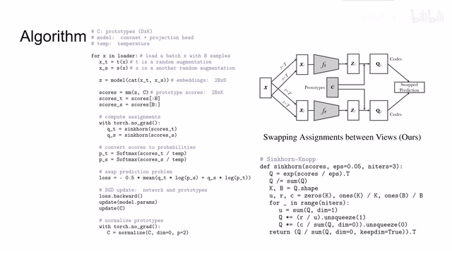
00:12:47–00:13:24 · 画面 026然后呢，我们在 score t 和 score s 的基础上对它做这个 Sinkhorn 这个算法，就是求一个我们想要的这个 code q。那么这里的 score t 得到的就是 qtscore s 呢得到的就是 qs。最后呢我们要构建这个 contrastive loss，其实是那个 cross entropy，我希望这个 score t 和这个 scores 这个应该是 qs 它们两个尽量接近。那么同样的我也希望这个
00:13:24–00:13:25 · 画面 027
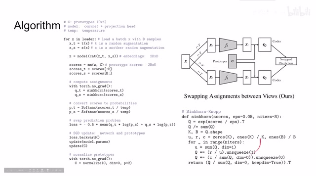
00:13:24–00:13:25 · 画面 02700:13:25–00:13:28 · 画面 028
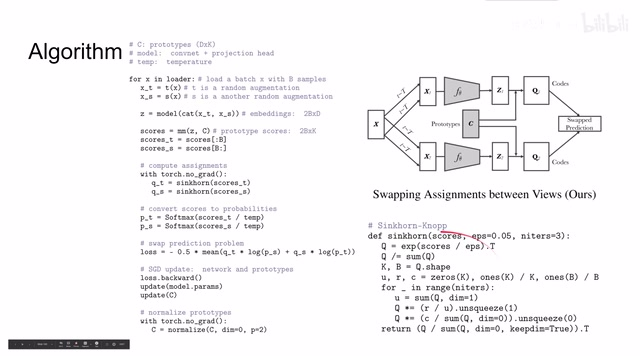
00:13:25–00:13:28 · 画面 02800:13:28–00:14:09 · 画面 029
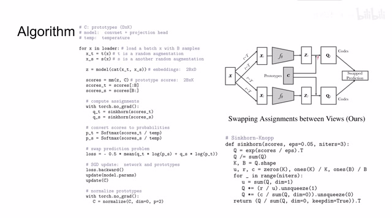
00:13:28–00:14:09 · 画面 029score s 和 qt 它们两个相互接近，但是因为我们有 temperature 和 softmax 所以不是直接用的 score，但是你能够理解它们相互对应的关系。那么得到这样一个 cross entropy 的 loss 之后我们再向前传递去更新我们的 model 去更新我们的 prototypes，然后更新完之后记得把 prototypes 再做 normalization，这个就是本文和核心算法
00:14:09–00:14:11 · 画面 030
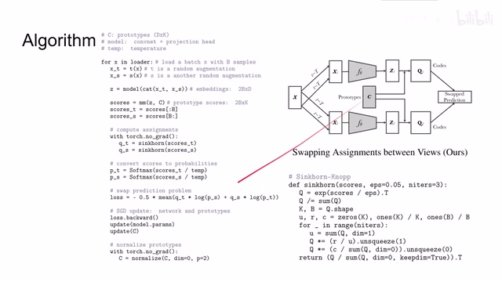
00:14:09–00:14:11 · 画面 03000:14:11–00:14:13 · 画面 031
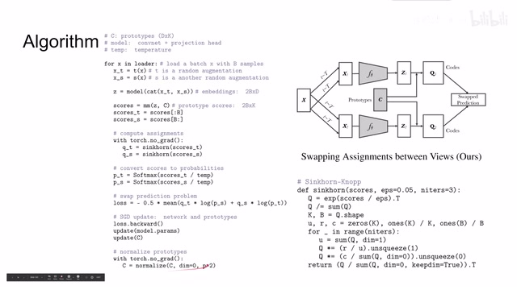
00:14:11–00:14:13 · 画面 03100:14:13–00:14:16 · 画面 032
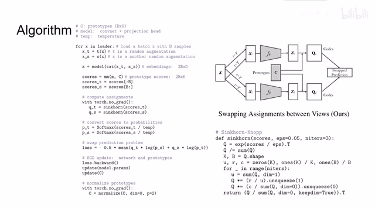
00:14:13–00:14:16 · 画面 032好的，那么终于把憋脚的部分讲完了。除去我们之前的算法，那么本文的另一个贡献呢，就是提出了说我有这个 multicrop，也就是我在训练的时候呢，除了用两个增强的圆尺寸的这个图像之外，我们还使用一个低像素的 crops。这些呢，就是原来图像中的一个个 patch，给它做不同的图像增强。这样子呢，我们就一共有 V 加 2 个 samples 了，它们就可以相互计算距离。但是呢，这里作者为了计算的方便
00:14:16–00:15:07 · 画面 033
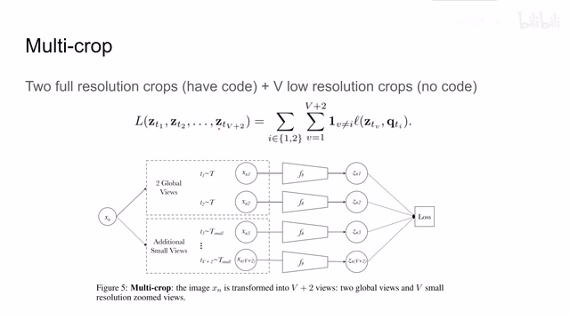
00:14:16–00:15:07 · 画面 033只在这些全尺寸的图像上做了我们刚刚的那个 optimal transportation，也就是求出它的 q 来。对于其他这 v 个低像素的这些 crops，它是并没有求出它的 code 来的。所以这里你看到我们的 loss 呢，有 2 乘以 v 加 2 个。同时呢，还要刨去一些 v 等于 i 的情况，它并不是 v 加 2 的平方个，也是因为我们只计算了两个 code好的，那么来到结果这里，作者汇报了 linear classification on ImageNet，对比了之前这些 unsupervised 的方法。那么本文的表现肯定是 outperform 之前的这些方法，然后很接近 supervised 的方法。这里还有不同参数量的情况下每个模型的表现，那么当然还有半渐度的情况下使用 1%的样本或者使用 10%的样本来翻团。那么本文还是 outperform 的其他的方法，甚至在 top5 的时候 outperform 这些
00:15:07–00:15:25 · 画面 034
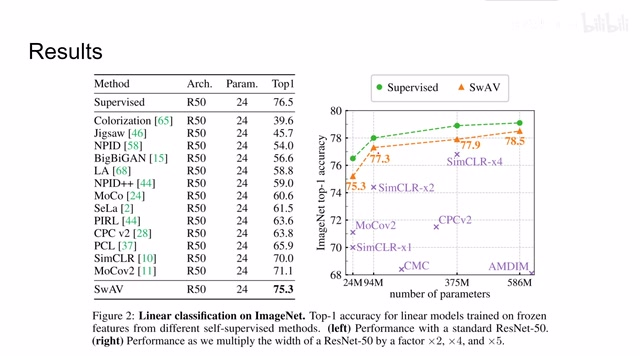
00:15:07–00:15:25 · 画面 03400:15:25–00:15:37 · 画面 035
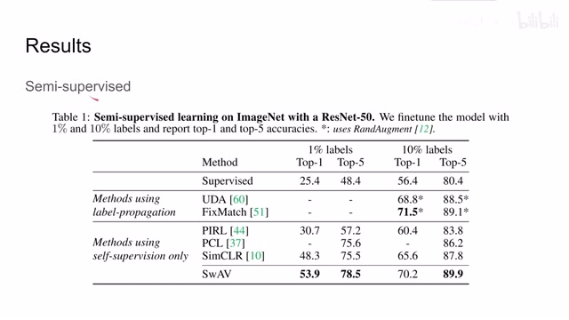
00:15:25–00:15:37 · 画面 035甚至这个套股比这些有 label propagation 的方法还要好然后当然也是吊打这些 supervised 的方法那么此外还有 transfer learning 和 small batch 因为我们非常关注当 batch size 很小的时候的情况可以看到本文提出的方法效果都是可以的那么最后作者还做了很多的消融实验比如说像 multicrop 他对 supervised 的方法没有什么提升但是对这些 self-supervised 的方法
00:15:37–00:15:38 · 画面 036
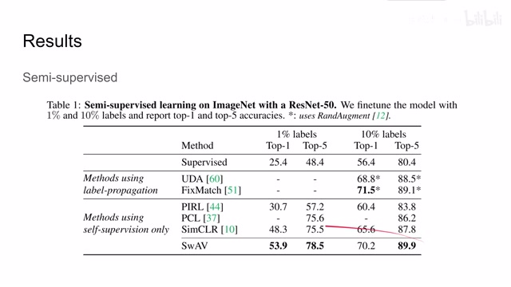
00:15:37–00:15:38 · 画面 03600:15:38–00:15:45 · 画面 037
00:15:38–00:15:45 · 画面 03700:15:45–00:15:53 · 画面 038
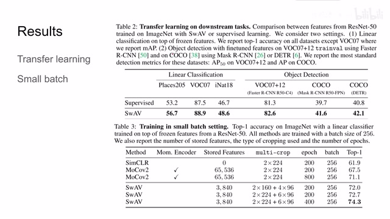
00:15:45–00:15:53 · 画面 03800:15:53–00:15:56 · 画面 039
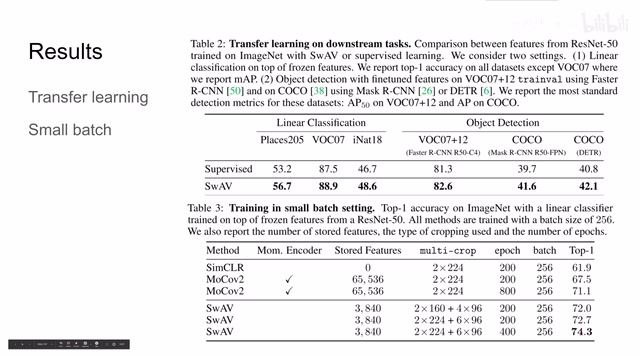
00:15:53–00:15:56 · 画面 03900:15:56–00:15:58 · 画面 040
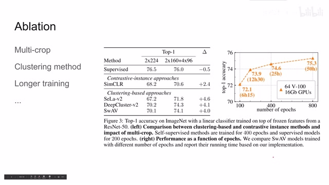
00:15:56–00:15:58 · 画面 04000:15:58–00:16:58 · 画面 041
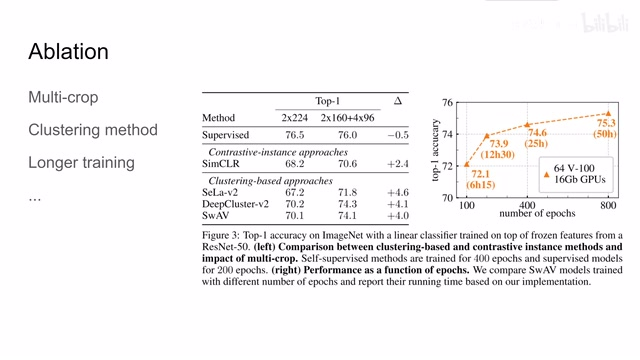
00:15:58–00:16:58 · 画面 041都有提升说明这个贡献呢是值得肯定的那作者还对比了像这些基于聚类的方法和这个 instance 也就是每一个 sample 每一个实例之间他们距离的这些方法说明看来现在聚类的方法呢效果是比较好的那作者还研究了如果如果把训练时间加长对吧随着训练时间的增加性能的表现呢也是逐渐在增加的这里呢作者还汇报其他的一些实验欢迎大家呢去原文还有幅度里面查看那么总的来说本文提出一种 online 的 clustering based 的 super self-supervised 方法那么取得的效果呢还是不错的就是这个论文的表述实在是太过简洁甚至有些晦涩的程度第一眼看上去呢不是那么好理解那么也是非常欢迎感兴趣的朋友去查看原文好的以上就是我对这篇论文的简单的分析感谢您的收看再见
00:16:58–00:16:59 · 画面 042
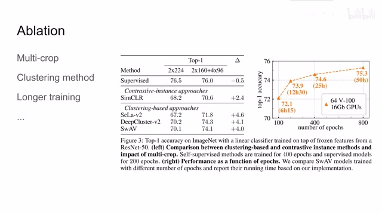
00:16:58–00:16:59 · 画面 042转写与来源说明 · 0 个自动复核提示
保留 37 个原始语音片段，0 个片段触发自动复核提示。提示仅用于定位可能的术语、重复或识别问题，不等于已确认错误。
讲解画面为源视频截图（640×360），不是可编辑 PPT 文件。全片按每秒 2 帧扫描内容变化，逐步展开页保留；连续动画保留代表画面。清晰度受源视频限制。
原视频：paper/合集_2026-10-16_表征学习/[论文简析]SwAV Swapping Assignments between multiple Views[2006.09882].mp4
SHA-256：1e9f5668e617431936d730f252ceed9be52724e0b5d7a1b5ade0c1842045f7c1
全文按视频语音与画面制作。原论文可从上方链接下载；完整资料包保留全文、原始逐字稿、字幕和校对记录。